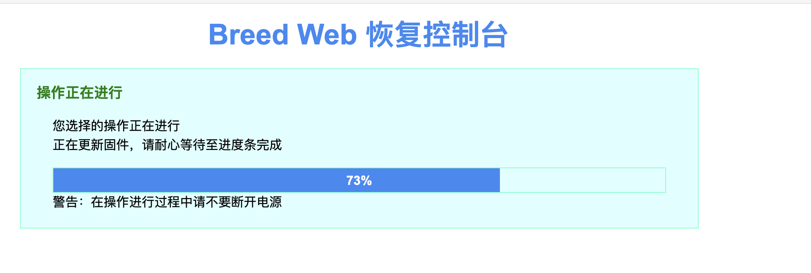

前言
最近很多科研工作要做，但是就是不想做，想整七整八。所以今天来折腾下路由器。极路由1S, 5661A。还是很有意思的。
看着本科16年买的极路由1S，虽然公司倒闭了，但是路由器的开发版，我仔细看了下论坛，应该是现在破解方式比较多的路由器之一。不过实话说2.4G HZ还是有点慢。等有时间了还是想新换一个方便刷机的2.4G, 5G WIFI 6路由器。但我去业界看了下，竟然很少有WIFI 6的 openwrt的系统。Glinet有一个，但是好贵，而且没开始卖。我有点春春欲动想去学了写一个。但是最近实在太忙，还是再放放。澳洲了有空闲时间一定要来试下。
暂时考虑着之后组网会有一个full control的路由器，所以还是把这个作为科学上网的中继路由。简单记录一下心酸的刷机历程。之后很多会员使用可能都需要先在中介科学上网路由刷下DNS再弄.
刷机指南
0. 极路由1S HC5661A
极路由1S（HC5661A）是一款无线路由，无线传输率为300Mbps，支持4个Lan + 1个Wan.
- Target: ramips
- Subtarget: mt76x8
- Package architecture: mipsel_24kc
- CPU: MediaTek MT7628AN
- CPU Cores: 1
- CPU: 580 MHz
- Flash: 16 MB
- RAM: 128 MB
- Ethernet 100M ports: 4
- Antenna：5 dBi
1. 获取SSH权限
现在极路由1S已经不能够官方途径得到开发者ssh权限了。只能通过what the fuck网址，哈哈.
- STEP 1: 先接入极路由wifi
- STEP 2: 登陆这个网站http://hiwifi.wtf/ 然后点击下图中两个按钮。

- STEP 3: 接着第一个网页 local token；可以看到local token在复制框框里面，直接复制下来。回到http://hiwifi.wtf/，可以看到有两个输入框，第一个local_token填刚刚复制的local_token.
- STEP 4: uuid链接打开以后是个json格式的页面，找到uuid的key，然后复制value里面的内容。如下图。

回到http://hiwifi.wtf/，可以看到有两个输入框，第二个uuid填刚刚复制的uuid. - STEP 5: 提交以后，可以看到有个框框弹出来。如果显示未成功，可以尝试多提交几次，直到显示如下图的某个端口打开。（不一定是1022）

2. 刷入不死uboot
STEP 1: 去官网下固件 https://breed.hackpascal.net/ 注意：极路由1S-HC5661A的主芯片是mt7628而非mt7620，千万别选错固件了，否则变砖后果自负。可以看到如下图搜索到的5661a的固件

STEP 2: 下载以后用scp命令拷贝到路由器上 scp breed-mt7628-hiwifi-hc5661a -P 1022 root@192.168.199.1:~/ 注意 -P后数字是你刚刚填上的
或者！也可以wget直接下载，先执行STEP 3 然后在路由器terminal执行 wget http://breed.hackpascal.net/breed-mt7628-hiwifi-hc5661a.binSTEP 3: ssh -p 1022 root@192.168.199.1 或者 ssh -p 22 root@192.168.199.1 注意-p后面的数字是端口，是根据第1阶段弹出来的ssh port的数字填入
STEP 4: mtd -r write breed-mt7628-hiwifi-hc5661a.bin u-boot 注意-r表示重启，写入成功以后会自动重启。 成功截图如下图所示

3. 登陆不死uboot
- STEP 1: 按住reset键，按住，然后拔掉电源，然后插上电源 这个步骤一定不要搞错！！
- STEP 2: 接着可以看到极路由开始闪了，只有左边第一个灯亮着，然后等待一会，用网线直接连极路由左边第一个路由口，WAN口，然后直接连上电脑。然后电脑关闭wifi。输入192.168.1.1 进入breed界面。如下图所示。

小tips: 如果第二次刷机进入，因为openwrt的cache可能进不了，可以换浏览器或者删掉cache再进。
- STEP 3: 再进行最后的openwrt的刷入前。点击左边第三个固件备份，然后把全部的bin文件下载下来，应该有两个，full.bin / eeprom.bin 然后再进行第4阶段。

4.刷入openwrt
- STEP 1: 再次点击左边的固件更新，会弹出如下图所示的网页。

- STEP 2: 从网上下载对应的openwrt固件。这里其实最困难。因为合适的固件非常难找，我最后是在恩山无限论坛 https://www.right.com.cn/forum/thread-4053336-1-1.html 找到的。下载下来。里面ssr plus，网易云音乐，各种插件应用尽有。
下载后如下图所示。然后像上图显示，勾选固件，点击选择上传文件，勾选自动重启。点击上传。
我也提供了一个下载链接，http://111.229.178.83/Resources/openwrt-ramips-mt76x8-hiwifi_hc5661a-squashfs-sysupgrade.bin
可以直接用我的服务器下载
- STEP 3: 上传以后会显示如下画面，然后路由器会重启。
 - STEP 4如果出现任何意外情况，可以直接重新登陆不死uboot 注意不用再安装uboot！！直接进行第3步骤
5. 进入openwrt
opewrt貌似是可以定制并且根据系统重新进行编译的一个系统。这次时间有限所以就暂时不学着怎么写了。有两种办法进入openwrt。
- 第一种就是直插网线，还是直插网线，然后注意管理ip还是192.168.1.1，然后注意也要不连Wifi。
- 第二种就是打开Wifi，注意openwrt如果刷入的是我上面写的固件，那密码就是admin
然后进入网站系统，192.168.199.1，就可以看到如下图所示的网站
 输入admin就可以登陆了。然后可以接着使用服务 - 广告屏蔽，ssr plus，科学上网，ZeroTier，网易云灰色歌曲等等。
输入admin就可以登陆了。然后可以接着使用服务 - 广告屏蔽，ssr plus，科学上网，ZeroTier，网易云灰色歌曲等等。
然后在网络一栏里面，可以看到网络接口，根据这两个选项区调整适应网络。过几天有空了，我再仔细研究下openwrt，先弄清楚这个系统的使用流程。